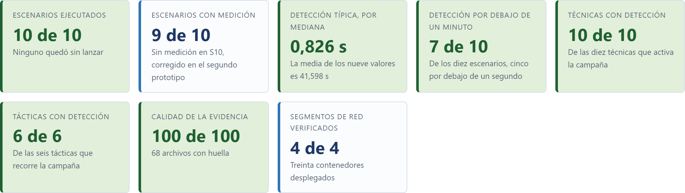
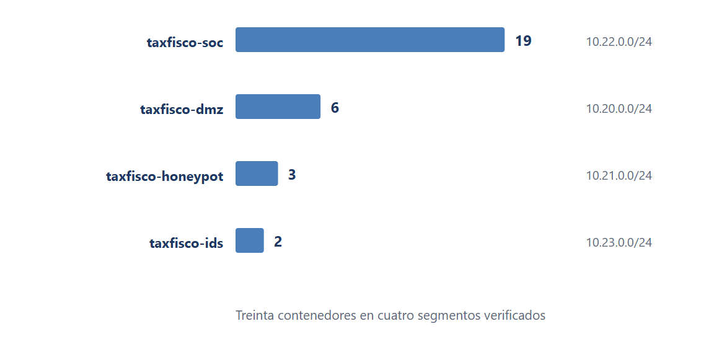
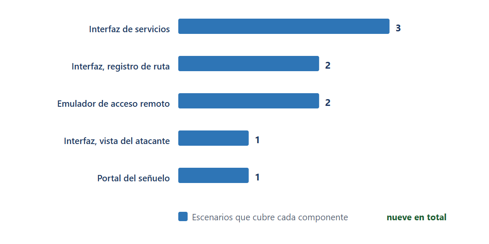
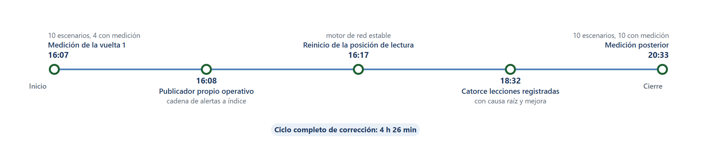
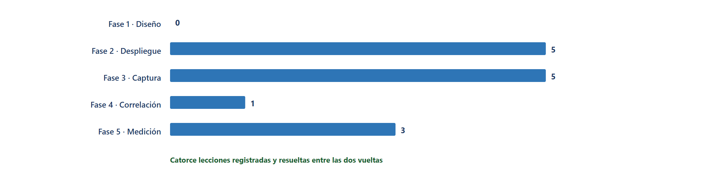
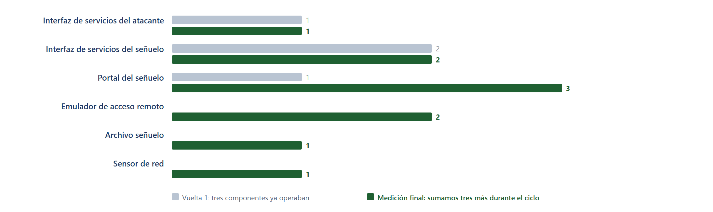

4.4 Resultados de la metodología
Dos aplicaciones de la metodología sobre una misma campaña, con un denominador declarado y una fuente de archivo para cada cifra.
La metodología Honeypot se aplica en dos ocasiones sobre una misma campaña de diez escenarios, cuyos resultados se presentan siguiendo el orden de ejecución y análisis establecido en la investigación. La exposición comienza con el resultado global de la aplicación, continúa con la descripción de las condiciones comunes de medición y desarrolla los resultados obtenidos por cada prototipo, para finalizar con la comparación entre ambos y la síntesis de los principales hallazgos. Esta organización permite examinar el comportamiento general de la metodología y profundizar en los resultados específicos que evidencian su funcionamiento y evolución.
Para interpretar adecuadamente los resultados, las cifras se distinguen según su procedencia y el tipo de respaldo disponible, considerando tres categorías que se identifican expresamente en las tablas y sus notas. La primera comprende los valores declarados directamente en los archivos de evidencia, como la cantidad de escenarios ejecutados o el número de archivos cuya huella se ha verificado. La segunda incluye los cálculos derivados de esos valores originales, entre los que se encuentran las medianas y las reducciones porcentuales. La tercera corresponde a los datos consolidados por los tableros de resultados que no se conservan de manera independiente en los archivos de evidencia.
Esta clasificación permite diferenciar los resultados según las posibilidades de verificación que ofrece cada fuente y establecer el respaldo documental correspondiente a cada cifra. Los datos de la primera categoría se contrastan con los archivos que los declaran, mientras que los de la segunda se recalculan a partir de los valores de origen publicados en las tablas con tres decimales. Por su parte, los datos de la tercera categoría se contrastan con las capturas de los tableros correspondientes, que documentan los valores consolidados y el estado de los indicadores representados.
4.4.1 Resultado global de la aplicación de la metodología
La respuesta de la medición, expresada en un índice que el lector puede recomputar.
El resultado global de la metodología se resume en el índice de cobertura de detección, que promedia cuatro proporciones sobre denominadores fijos y alcanza 85,0 % en el Prototipo 1, 32,5 % en la vuelta 1 del Prototipo 2 y 92,5 % en su medición final. La Tabla 1 enumera los planos de resultado que ese índice resume, cada uno con la fuente que lo respalda, mientras que la Tabla 2 y la Figura 1 desglosan los cuatro componentes del promedio.
Tabla 1
Planos de resultado y fuente que los respalda
| Plano | Pregunta que responde | Resultado | Fuente |
|---|---|---|---|
| Cobertura de la medición | Cuántos escenarios de la campaña quedan con tiempo registrado | 9 de 10 en el Prototipo 1, 10 de 10 en el Prototipo 2 | Reportes de indicadores de los dos laboratorios |
| Velocidad de la detección | Cuánto tarda la cadena en registrar el primer evento | Mediana de 0,826 s a 0,511 s; percentil 95 de 14,583 s a 9,266 s entre las dos vueltas del segundo laboratorio | Reportes de indicadores de los dos laboratorios |
| Cobertura técnica | Cuántas técnicas de la campaña reciben fuente de detección | 10 de 10 técnicas de la campaña | Reporte de cobertura de técnicas |
| Custodia de la evidencia | Si la evidencia conserva validez forense | 100 de 100 en los tres momentos medidos | Reporte de indicadores de cada ejecución |
| Registro de correcciones | Si la metodología produce un aprendizaje verificable | 14 lecciones con resolución documentada | Registro de lecciones aprendidas |
Comparar el efecto de las dos aplicaciones con un solo número exige construir un índice que use únicamente datos verificables del laboratorio. El índice de cobertura de detección promedia cuatro proporciones con denominadores fijos, que son los escenarios con tiempo medido sobre los diez de la campaña, las técnicas de la campaña con fuente sobre las diez, las tácticas con fuente sobre las seis y los escenarios detectados en menos de un segundo sobre los diez. La Tabla 2 y la Figura 1 presentan el desglose de los cuatro componentes y el resultado de su promedio, de manera que cualquier lector pueda recomputar el índice.
Tabla 2
Componentes y resultado del índice de cobertura de detección
| Componente del índice | Denominador | Prototipo 1 | P2 · vuelta 1 | P2 · medición final |
|---|---|---|---|---|
| Escenarios con tiempo medido | 10 | 9 · 0,900 | 4 · 0,400 | 10 · 1,000 |
| Técnicas de la campaña con fuente de detección | 10 | 10 · 1,000 | 4 · 0,400 | 10 · 1,000 |
| Tácticas con fuente de detección | 6 | 6 · 1,000 | 3 · 0,500 | 6 · 1,000 |
| Escenarios con detección por debajo de 1 s | 10 | 5 · 0,500 | 0 · 0,000 | 7 · 0,700 |
| Índice de cobertura de detección | Promedio | 85,0 % | 32,5 % | 92,5 % |
Figura 1
El índice alcanza 85,0 % en el Prototipo 1, cae a 32,5 % en la vuelta 1 del Prototipo 2 y sube a 92,5 % en su medición final. La caída de la vuelta 1 no describe un deterioro del laboratorio, porque esa vuelta se ejecuta con menos fuentes de registro, con lo que el valor mide la capacidad de detección antes de aplicar las correcciones. El contraste que el índice sostiene con mayor solidez es el que ocurre dentro del segundo laboratorio, porque las dos vueltas comparten campaña, señuelo y denominador.
El índice no sustituye a los indicadores que lo componen y su lectura debe hacerse siempre junto con ellos, nunca de forma aislada. El valor de 92,5 % significa que los diez escenarios producen tiempo, que las diez técnicas de la campaña y las seis tácticas tienen fuente y que siete de los diez escenarios se detectan en menos de un segundo. Los cuatro componentes del índice entran en el promedio con el mismo peso, porque el cálculo no pondera ninguno de ellos.
4.4.2 Base común de la medición: campaña, denominadores y fuentes
Origen de los datos, unidades de medida y denominadores declarados en los tres momentos medidos.
La metodología Honeypot se aplica en dos laboratorios de servicios fiscales que ejecutan la misma campaña, lo que da una base común para leer ambos resultados en una misma lectura. El primero es el TaxFisco Research Lab, que opera sobre una entidad homologada del rubro de los servicios fiscales digitales, mientras que el segundo corresponde al laboratorio del Servicio de Impuestos Nacionales.
Cada uno de ellos despliega su propio señuelo verificado, definido como el componente que responde al atacante como si el servicio fuera real. Cada técnica del marco MITRE ATT&CK (MITRE Corporation, 2024) se ejecuta como un escenario, que es un período controlado y verificable con hora de arranque conocida. La campaña reúne diez escenarios que ejercitan diez técnicas distintas, mientras que el inventario del señuelo comprende diecisiete técnicas agrupadas en ocho tácticas, de manera que la campaña recorra seis de las ocho.
El ciclo completo de gestión de incidentes se organiza según las cinco fases que establece ISO/IEC 27035-1:2023 (International Organization for Standardization, 2023), que ordenan el trabajo desde la planificación del despliegue hasta el registro de las lecciones aprendidas, pasando por la detección, el reporte y el análisis de lo detectado. La Tabla 10 reproduce la denominación oficial de cada fase junto a la evidencia de laboratorio que respalda su ejecución. Cada laboratorio ejecuta las cinco fases, si bien el verificador automático del primer laboratorio marca solo una como verificada por detección automática. Esa diferencia se explica en el apartado 4.4.3.4, en el que la revisión manual de la Tabla 10 no coincide con la salida del verificador automático.
Una fuente de registro concreta conserva la señal que producen el señuelo y el resto del despliegue, de manera que el registro pueda consultarse después del ejercicio. El tiempo de detección corresponde a los segundos transcurridos entre el arranque del escenario y la primera señal que registra una fuente, de modo que un escenario sin señal registrada carece de medición. Las señales registradas en un laboratorio se resumen en dos magnitudes operativas, la mediana que divide la muestra ordenada en dos mitades iguales y el percentil 95 que marca el valor por debajo del cual se sitú el 95 % de las mediciones.
La evidencia se custodia como archivo con huella, es decir, como suma de verificación que detecta cualquier modificación, mientras que la calidad se mide como el porcentaje de archivos que superan esa verificación. El valor 100 de 100 indica integridad completa en el lote, sin que esa integridad presuponga verificación forense fuera del laboratorio. Los datos que se citan en cada cifra proceden de archivos distintos del repositorio, declarados en la nota correspondiente, sin compartir escala entre sí porque se interpretan con reglas propias.
Los denominadores comunes a las dos mediciones son diez escenarios, diez técnicas y seis tácticas, mientras que cambian según el momento medido los escenarios con tiempo medido, las técnicas con fuente, las tácticas con fuente y los escenarios con detección por debajo de un segundo. La Tabla 3 declara los denominadores por columna y la fuente de cada fila, para que toda cifra pueda leerse sobre el mismo universo de medida.
Tabla 3
Denominadores declarados en los tres momentos medidos
| Denominador | Prototipo 1 | P2 · vuelta 1 | P2 · medición final | Fuente |
|---|---|---|---|---|
| Escenarios de la campaña | 10 | 10 | 10 | Guion de escenarios |
| Técnicas activadas por la campaña | 10 | 10 | 10 | Guion de escenarios |
| Tácticas recorridas por la campaña | 6 | 6 | 6 | Reporte de cobertura |
| Escenarios con tiempo medido | 9 | 4 | 10 | Reporte de indicadores |
| Técnicas de la campaña con fuente de detección | 10 | 4 | 10 | Reporte de cobertura |
| Tácticas con fuente de detección | 6 | 3 | 6 | Reporte de cobertura |
| Escenarios con detección por debajo de 1 s | 5 | 0 | 7 | Reporte de indicadores |
Ambos laboratorios miden el mismo conjunto de escenarios, de manera que sus resultados se comparen sobre el mismo universo de medida, aunque cada panel de la Figura 2 declare su propia escala porque los dos laboratorios alcanzan magnitudes muy distintas.
Figura 2
El escenario de salida de datos por nombres de dominio queda fuera de la medición del primer laboratorio, porque ninguno de los cinco componentes de su despliegue registró un evento de detección para ese escenario.
Tabla 4
Tiempo de detección de los diez escenarios en los dos laboratorios
| Escenario | Técnica | Prototipo 1 | Fuente en el Prototipo 1 | Prototipo 2 | Fuente en el Prototipo 2 |
|---|---|---|---|---|---|
| S01 · Reconocimiento activo | T1595 | 16,405 s | Interfaz de servicios, vista del atacante | 15,910 s | Interfaz de servicios del atacante |
| S02 · Escaneo web | T1595.002 | 0,826 s | Portal del señuelo | 1,095 s | Portal del señuelo |
| S03 · Fuerza bruta por acceso remoto | T1110.001 | 85,000 s | Emulador de acceso remoto | 0,000 s | Emulador de acceso remoto |
| S04 · Inyección de consultas | T1190 | 260,108 s | Interfaz de servicios | 0,137 s | Portal del señuelo |
| S05 · Suplantación de credenciales | T1110.004 | 0,141 s | Interfaz de servicios | 1,145 s | Interfaz de servicios del señuelo |
| S06 · Inyección en el navegador | T1059.007 | 0,824 s | Interfaz de servicios | 0,460 s | Portal del señuelo |
| S07 · Uso de credenciales válidas | T1078 | 0,543 s | Interfaz de servicios, registro de ruta | 0,264 s | Interfaz de servicios del señuelo |
| S08 · Transferencia de archivo al interior | T1105 | 0,533 s | Interfaz de servicios, registro de ruta | 0,562 s | Archivo señuelo |
| S09 · Conexión inversa | T1059.004 | 10,000 s | Emulador de acceso remoto | 0,000 s | Emulador de acceso remoto |
| S10 · Salida de datos por nombres de dominio | T1048.003 | Sin medición | Ninguna fuente lo registra | 0,646 s | Sensor de red |
| Totales de la campaña | 10 técnicas | 9 de 10 con medición | 5 componentes | 10 de 10 con medición | 6 componentes |
El contraste de la Tabla 5 revela dos cambios, de los que el primero afecta a la cobertura de la medición. La cobertura pasa de nueve escenarios sobre diez en el primer laboratorio a cuatro sobre diez en la vuelta 1 y a diez sobre diez en la medición final, porque el segundo laboratorio incorpora el archivo señuelo y el sensor de red como fuentes de registro. El segundo cambio afecta a la velocidad, que se acorta sobre todo en los dos escenarios que el primer laboratorio mide con larga duración, la fuerza bruta por acceso remoto y la inyección de consultas, que pasan de 85 s a 0 s y de 260,108 s a 0,137 s, respectivamente.
Tabla 5
Cobertura de la medición y fuentes de registro en los tres momentos medidos
| Indicador | Prototipo 1 | P2 · vuelta 1 | P2 · medición final | Lectura |
|---|---|---|---|---|
| Escenarios con tiempo medido | 9 | 4 | 10 | La cobertura se amplía en el segundo laboratorio |
| Fuentes de registro | 5 | 3 | 6 | Se incorporan el emulador de acceso remoto, el archivo señuelo y el sensor de red |
| Técnicas con fuente de detección | 10 | 4 | 10 | La medición final cubre toda la campaña |
| Tácticas con fuente de detección | 6 | 3 | 6 | La campaña recorre seis tácticas |
| Percentil 95 de detección | No declarado | 14,583 s | 9,266 s | −5,317 s entre las dos vueltas |
| Lecciones con resolución | No aplica | 7 | 14 | El registro se duplica en la segunda vuelta |
| Archivos de evidencia con huella | 68 | 91 | 91 | Constante en los dos últimos momentos |
| Calidad de la evidencia | 100 de 100 | 100 de 100 | 100 de 100 | Constante en los tres momentos |
La Tabla 6 recoge las diecisiete técnicas del inventario del señuelo con la fuente que las registra en la medición final del Prototipo 2. Esa medición es la única en que las diez técnicas de la campaña tienen fuente asignada, ya que las siete restantes pertenecen al catálogo del señuelo sin que ningún escenario las ejerza.
Tabla 6
Técnicas del inventario del señuelo y su fuente de detección
| Técnica | Táctica | Escenario | Fuente en la medición final | |
|---|---|---|---|---|
| T1048.003 | Exfiltration · exfiltración | S10 | Sensor de red | |
| T1059 | Execution · ejecución | En inventario | Sin escenario | |
| T1059.004 | Execution · ejecución | S09 | Emulador de acceso remoto | |
| T1059.006 | Execution · ejecución | En inventario | Sin escenario | |
| T1059.007 | Execution · ejecución | S06 | Portal del señuelo | |
| T1078 | Initial Access · acceso inicial | S07 | Interfaz de servicios | |
| T1078.001 | Initial Access · acceso inicial | En inventario | Sin escenario | |
| T1083 | Discovery · descubrimiento | En inventario | Sin escenario | |
| T1105 | Command and Control · comando y control | S08 | Archivo señuelo | |
| T1110.001 | Credential Access · acceso a credenciales | S03 | Emulador de acceso remoto | |
| T1110.004 | Credential Access · acceso a credenciales | S05 | Interfaz de servicios | |
| T1190 | Initial Access · acceso inicial | S04 | Portal del señuelo | |
| T1213 | Collection · recolección | En inventario | Sin escenario | |
| T1530 | Collection · recolección | En inventario | Sin escenario | |
| T1595 | Reconnaissance · reconocimiento | S01 | Interfaz de servicios | |
| T1595.002 | Reconnaissance · reconocimiento | S02 | Portal del señuelo | |
| T1595.003 | Reconnaissance · reconocimiento | En inventario | Sin escenario | |
| Totales del inventario | 17 técnicas | 8 tácticas | 10 escenarios | 10 con fuente |
4.4.3 Resultados del primer prototipo en el TaxFisco Research Lab
Condiciones, despliegue verificado, cadena de registro y cobertura normativa.
El primer laboratorio comprueba el funcionamiento aislado de cada componente de la cadena de detección de manera que su señuelo siga la clasificación de señuelos de producción que describe Spitzner (2003) y responda al atacante como si sus servicios fueran reales. El ejercicio se ejecuta en una sola medición y carece por tanto de comparación interna entre dos vueltas.
El componente que registra la detección es la parte del laboratorio que conserva la señal del ataque para poder consultarla más tarde, mientras que la fuente de registro concreta es el componente específico que produce la primera señal de un escenario. El sensor de red observa el tráfico del segmento que aloja el señuelo y el emulador de acceso remoto imita un servicio de acceso remoto para provocar y registrar intentos de fuerza bruta. El archivo señuelo es un archivo sin contenido real que registra cualquier modificación como señal de ataque, mientras que las interfaces de servicios exponen al atacante los servicios del señuelo bajo tres variantes declaradas.
4.4.3.1 Condiciones de la medición
La Tabla 7 declara el laboratorio, la entidad, el método de cálculo y el alcance de la medición, que en este caso se limita a una única ejecución de la campaña, mientras que la Figura 3 reúne sus indicadores en una sola vista.
Tabla 7
Condiciones de la medición del Prototipo 1
| Condición | Valor |
|---|---|
| Laboratorio | TaxFisco Research Lab |
| Entidad | Homologada del rubro de servicios fiscales digitales |
| Fecha del reporte | 14 de septiembre de 2026, 07:31:44 UTC |
| Método de cálculo | Tiempo desde el inicio del escenario hasta el primer evento que lo registra |
| Escenarios ejecutados | 10 |
| Escenarios con medición | 9 |
| Alcance de la medición | Una sola ejecución de la campaña, con evidencia completa y verificada |
evidencias/07-metricas/07_kpi-report.json. La fecha y la hora se expresan en tiempo universal y corresponden al registro del reporte. El método sitúa el instante inicial en el arranque de cada escenario y el instante final en el primer evento que registra una fuente.Figura 3

4.4.3.2 Despliegue verificado y segmentación de red
La Tabla 8 declara la subred, el número de contenedores y la función de los cuatro segmentos verificados, entre los que el despliegue del señuelo reparte sus treinta contenedores. Esa distribución mantiene separado el tráfico que el señuelo recibe del tráfico de gestión y del de los sensores, como muestra la Figura 4.
Tabla 8
Segmentación verificada del señuelo del Prototipo 1
| Red | Subred | Contenedores | Función del segmento |
|---|---|---|---|
| taxfisco-dmz | 10.20.0.0/24 | 6 | Segmento del señuelo expuesto |
| taxfisco-honeypot | 10.21.0.0/24 | 3 | Segmento interior del señuelo |
| taxfisco-soc | 10.22.0.0/24 | 19 | Segmento de gestión y análisis |
| taxfisco-ids | 10.23.0.0/24 | 2 | Segmento de los sensores de red |
| Total | — | 30 | Cuatro segmentos verificados |
evidencias/03-aislamiento-red/02_subnets.txt.Figura 4

4.4.3.3 Componentes que registran la detección
Cinco componentes registran la detección y cada uno aporta un número distinto de escenarios a la cadena de alerta. El emulador de acceso remoto cubre dos escenarios y la interfaz de servicios, junto con su variante con registro de ruta, cubre cinco entre las dos, mientras que el portal del señuelo junto con la interfaz con vista del atacante cubren uno cada uno, como detallan la Tabla 9 y la Figura 5.
Tabla 9
Componentes que registran la detección en los nueve escenarios medidos del Prototipo 1
| Componente que registra la detección | Escenarios que cubre | Cantidad |
|---|---|---|
| Interfaz de servicios | S04, S05, S06 | 3 |
| Interfaz de servicios con registro de ruta | S07, S08 | 2 |
| Emulador de acceso remoto | S03, S09 | 2 |
| Interfaz de servicios con vista del atacante | S01 | 1 |
| Portal del señuelo | S02 | 1 |
| Total de escenarios medidos | S01 a S09 | 9 |
Figura 5

4.4.3.4 Cobertura de las fases de ISO/IEC 27035
Advertencia de trazabilidad. El reporte automatizado del Prototipo 1 marca una sola de las cinco fases de ISO/IEC 27035 como verificada por detección automática, que corresponde a la fase de detección y reporte. El desglose por fase que presenta la Tabla 10 proviene de una revisión manual de los componentes desplegados y no de ese verificador, por lo que la diferencia entre ambas lecturas conviene declararla cuando se use la tabla.
Tabla 10
Cobertura normativa que el laboratorio sustenta
| Marco | Fase o control | Evidencia en el laboratorio |
|---|---|---|
| ISO/IEC 27035 | Fase 1 · Planificar y preparar | Gestor de eventos preconfigurado, plantillas de casos, flujos automatizados, búsquedas dirigidas previas y reglas propias de red |
| ISO/IEC 27035 | Fase 2 · Detección y reporte | Reglas de correlación del gestor, reglas de detección del motor de red y registros del sensor y señuelos instrumentados |
| ISO/IEC 27035 | Fase 3 · Evaluación y decisión | Gestión de casos, analizadores de inteligencia de amenazas y correlación de indicadores de compromiso y flujos de enriquecimiento |
| ISO/IEC 27035 | Fase 4 · Respuesta | Scripts de contención y de aislamiento, distribución de indicadores y segmentación de redes |
| ISO/IEC 27035 | Fase 5 · Lecciones aprendidas | Informes de cierre de caso, tablero de indicadores y actualización de reglas desde la observación |
| ISO/IEC 27001 | Controles de gestión de incidentes | Planificación de la respuesta, ejecución, aprendizaje y preservación de la evidencia |
| ISO/IEC 27001 | Controles de monitoreo y red | Actividades de monitoreo y seguridad de las redes |
4.4.4 Resultados del segundo prototipo en el laboratorio del Servicio de Impuestos Nacionales
Línea base, ciclo de corrección y medición final.
El segundo laboratorio muestra qué produce la metodología cuando se aplica por segunda vez sobre el mismo señuelo. Los diez escenarios y las técnicas que activan se mantienen sin cambios entre las dos vueltas, de modo que la diferencia entre las columnas corresponda al trabajo de corrección y no a un cambio de instrumentación.
Una vuelta corresponde a una ejecución completa de la campaña sobre el mismo señuelo, mientras que una iteración agrupa el ciclo que va desde una vuelta hasta la siguiente con sus correcciones intermedias. Una lección aprendida registra entre ambas vueltas un hallazgo que incluye su causa raíz y la corrección aplicada, de manera que el registro se contabilice en una de las cinco fases del ciclo de despliegue de ese laboratorio, que son diseño, despliegue, captura, correlación y Medición.
4.4.4.1 Línea base de la primera vuelta
La primera vuelta ejecuta los diez escenarios de la campaña con el instrumental sin corregir, de manera que sus resultados describan el punto de partida sobre el que interviene el ciclo. Solo cuatro de los diez escenarios producen tiempo de detección y las fuentes de registro son tres, con lo que la campaña mide cuatro técnicas de diez y tres tácticas de seis. Los seis escenarios restantes registran ataques que el señuelo captura, sin que la atribución consiga asociarlos a un componente concreto.
4.4.4.2 Ciclo de corrección y lecciones aprendidas
La primera vuelta mide cuatro de los diez escenarios y origina los hallazgos que el ciclo de corrección convierte en catorce lecciones registradas. La diferencia entre la vuelta inicial y la medición final se lee, entonces, como el efecto de aplicar esas lecciones. El ciclo completo, desde la línea base hasta la medición final, toma cuatro horas con veintiséis minutos, lo que sitúa el esquema de iteración dentro de una sola jornada de trabajo, como detallan la Tabla 11 y la Figura 6.
Tabla 11
Hitos del ciclo de iteraciones del Prototipo 2
| Hito | Momento | Qué ocurrió | Evidencia |
|---|---|---|---|
| Medición de la vuelta 1 | 4 oct 2026 · 16:07 UTC | Diez escenarios ejecutados, medición en cuatro de ellos | Reporte de indicadores de la vuelta 1 |
| Cadena de alertas e indexación | 4 oct 2026 · 16:08 UTC | Publicador propio operativo, tablero con datos reales | Commits 20ee788 y 2d13573 |
| Reinicio de la posición de lectura | 4 oct 2026 · 16:17 UTC | Motor de red estable para la lectura del tráfico | Registro de la cadena de alertas |
| Registro de lecciones cerrado | 4 oct 2026 · 18:32 UTC | Catorce lecciones con hallazgo, causa raíz y mejora aplicada | Registro de lecciones aprendidas |
| Medición posterior | 4 oct 2026 · 20:33 UTC | Diez escenarios ejecutados, medición en los diez | Reporte de indicadores de la vuelta 2 |
| Duración total del ciclo | 4 h 26 min | De la vuelta 1 a la medición final | Marcas de ambos reportes |
Figura 6

Las catorce lecciones registradas entre las dos vueltas cuentan todas con una resolución documentada, de las que once identifican su causa raíz y aplican la corrección correspondiente. Las tres restantes se resuelven con una mitigación, porque su causa se sitúa fuera del segmento que controla la metodología, tal como muestran la Tabla 12 y la Figura 7.
Tabla 12
Detalle de las catorce lecciones aprendidas del Prototipo 2
| ID | Fase del despliegue | Hallazgo | Causa raíz | Corrección aplicada | Estado |
|---|---|---|---|---|---|
| L1 | F3 | El módulo de análisis no ingería los registros de los sensores | El archivo de configuración quedaba con XML inválido porque el bloque de registro local se añadía después del elemento raíz | Script que inserta los registros dentro de la raíz y absorbe el bloque sobrante | Cerrada |
| L2 | F3 | Las alertas nunca llegaban al índice | El recolector incluye un campo que el motor de búsqueda de destino rechaza en cada envío masivo | Publicador propio que indexa las alertas por HTTP sin ese campo | Cerrada |
| L3 | F2 | El gestor de registros se reiniciaba cada dos minutos | El recolector entra en pánico al negociar el canal cifrado y el supervisor interpreta la caída como fin del contenedor | El recolector queda con salida por consola y un lector inerte | Cerrada |
| L4 | F3 | El motor de red seguía detectando pero el gestor dejó de alertar | El lector conserva la posición de lectura y el desplazamiento queda desfasado | Script que trunca el archivo para forzar el reinicio de lectura | Cerrada |
| L5 | F5 | Los paneles mostraban ausencia de datos | Incompatibilidad de versión entre el generador de consultas y el motor de búsqueda | Script que convierte las diecisiete consultas del tablero a un formato admitido | Cerrada |
| L6 | F5 | Los paneles devolvían cero con documentos indexados | Las alertas llevan el campo de tiempo con otro nombre del que usan el patrón de índice | El publicador copia el campo de tiempo al nombre esperado y añade la severidad | Cerrada |
| L7 | F2 | Un fallo puntual de arranque tumbaba el laboratorio entero | Los scripts de arranque usaban modo de interrupción ante error | Los tres scripts restauran la copia de seguridad y terminan siempre con éxito | Cerrada |
| L8 | F3 | El tablero nativo cargaba el shell pero no renderizaba las vistas | La imagen local del producto aparece incompleta | Se aplica una mitigación documentada que sustituye la visualización por el tablero de métricas | Con mitigación |
| L9 | F4 | La plataforma de incidentes redirigía toda ruta al módulo de organizaciones | Estado de licencia en prueba del producto de gestión de incidentes | Se aplica una mitigación documentada que deja el flujo verificado hasta la generación de la alerta | Con mitigación |
| L10 | F2 | El segmento declarado para los sensores nunca llegaba a crearse | Los sensores se ejecutan en modo host y el segmento declarado no se materializa | Se aplica una mitigación documentada que verifica la composición efectiva en tres segmentos | Con mitigación |
| L11 | F5 | Seis escenarios quedaban fuera de la referencia pese a que el señuelo registró el ataque | El calculador leía una sola clave para atribuir la detección y cada escenario la escribía con un nombre distinto | La función acepta las tres variantes de clave y los escenarios sin objetivo lo declaran | Cerrada |
| L12 | F2 | La campaña se bloqueaba en el cuarto escenario | Las herramientas de ataque se ejecutaban sin límite de tiempo | Se fija un límite de tiempo en las herramientas y en sus conexiones | Cerrada |
| L13 | F2 | Un escenario informaba captura de sesión sin que hubiera conexión | La herramienta de prueba no estaba instalada y el script ocultaba el resultado parcial | Se comprueba la herramienta al inicio y se instalaron las que faltaban | Cerrada |
| L14 | F3 | Dos escenarios no podían detectarse por falta de fuente | El calculador solo consulta tres fuentes y ninguna lee el archivo señuelo ni el tráfico DNS | Se añaden el archivo señuelo y el sensor de red como fuentes de detección | Cerrada |
Figura 7

4.4.4.3 Medición final y estado de la cadena de alertas
La medición final cubre los diez escenarios de la campaña y cada uno recibe una fuente de detección identificable, entre las que figuran el emulador de acceso remoto, el portal del señuelo, la interfaz de servicios, el archivo señuelo y el sensor de red. La Figura 8 muestra el tablero de alertas que sostiene esa cobertura, con una actividad sostenida a lo largo de toda la ventana observada.
Figura 8

evidencia-visual/prototipo-2-vuelta-2.png.4.4.5 Comparación entre los dos prototipos
Qué cambia entre las dos aplicaciones y qué se conserva.
4.4.5.1 Fuentes que registran la detección
Durante el ciclo se incorporan el emulador de acceso remoto, el archivo señuelo y el sensor de red, tres componentes que funcionan como fuente de registro y que la Figura 9 compara con los tres que ya operaban en la vuelta 1. El portal del señuelo pasa de un escenario a tres, porque en la medición final registra el escaneo web, la inyección de consultas y la inyección en el navegador.
Figura 9

4.4.5.2 Volumen de actividad y custodia de la evidencia
El volumen de actividad registra cuántos eventos producen el señuelo y los sensores en cada una de las tres ejecuciones medidas, de manera que se pueda comprobar si el tráfico y la custodia cambian al mismo tiempo. La Tabla 13 muestra que el incremento de tráfico del Prototipo 2 coincide con la ampliación de la cobertura de medición, mientras que el volumen de evidencia y la calidad de la custodia permanecen constantes entre sus dos vueltas.
Tabla 13
Volumen de actividad de los dos laboratorios
| Indicador | Prototipo 1 | Qué lo produce en el Prototipo 1 | P2 · vuelta 1 | P2 · medición final | Variación en el Prototipo 2 |
|---|---|---|---|---|---|
| Escenarios ejecutados | 10 | La campaña de escenarios | 10 | 10 | Constante |
| Ataques registrados en el señuelo | 46 | Interfaz de servicios | 54 | 254 | +370 % |
| Peticiones atendidas por la interfaz | 1 758 | Interfaz de servicios | 725 | 1 508 | +108 % |
| Conexiones capturadas por el emulador | 8 | Emulador de acceso remoto | 7 | 38 | +443 % |
| Peticiones recibidas por el portal | 8 875 | Portal del señuelo | 15 765 | 78 186 | +396 % |
| Archivos de evidencia con huella | 68 | Custodia de la evidencia | 91 | 91 | Constante |
| Calidad de la evidencia verificada | 100 de 100 | Verificación de integridad | 100 de 100 | 100 de 100 | Constante |
4.4.5.3 Escenarios comparables entre las dos vueltas
Solo cuatro escenarios conservan medición en las dos vueltas y constituyen la base comparable dentro de este laboratorio, de modo que la Tabla 14 los reúna con la reducción porcentual que presenta cada uno y la Figura 10 muestre la comparación.
Tabla 14
Escenarios que conservan medición en las dos vueltas del Prototipo 2
| Escenario | Técnica | Vuelta 1 | Medición final | Reducción | Origen del dato |
|---|---|---|---|---|---|
| S01 · Reconocimiento activo | T1595 | 16,851 s | 15,910 s | 5,6 % | Interfaz de servicios del atacante |
| S02 · Escaneo web | T1595.002 | 1,214 s | 1,095 s | 9,8 % | Portal del señuelo |
| S05 · Suplantación de credenciales | T1110.004 | 1,734 s | 1,145 s | 34,0 % | Interfaz de servicios del señuelo |
| S07 · Uso de credenciales válidas | T1078 | 1,063 s | 0,264 s | 75,2 % | Interfaz de servicios del señuelo |
Figura 10

La reducción más marcada corresponde al uso de credenciales válidas, que pasa de 1,063 a 0,264 segundos en la Medición final. La menor reducción corresponde al reconocimiento activo, con un 5,6 %, porque la señal de ese escenario la produce la vista del atacante y no el señuelo. Los seis escenarios restantes carecen de valor de referencia en la vuelta 1 y amplían la cobertura en la medición final, como muestra la Tabla 4, mientras que el estado final de la cadena de alertas figura en el tablero de la Figura 8.
Advertencia de comparabilidad. El tablero de la vuelta 1 y el de la medición final cubren ventanas temporales distintas, de tres horas y de veinticuatro horas, porque la cadena de indexación se puso en marcha entre una captura y la otra. La comparación entre ambos paneles se apoya en la tendencia y no en la igualdad de los totales.
4.4.6 Síntesis de los resultados
Qué sostiene la evidencia, qué no y bajo qué condiciones se lee.
La lectura de conjunto confirma que la metodología produce su resultado más sólido dentro del segundo laboratorio, cuyas dos vueltas comparten campaña, señuelo y denominador. Los planos que la evidencia sostiene con más fuerza son la cobertura de la medición, la custodia de los archivos y el registro de correcciones, mientras que la velocidad de detección se lee siempre junto con el agregado de instrumentación.
Tres precisiones condicionan la lectura de estos resultados y cada una afecta a la fuerza de una afirmación concreta. La primera se refiere a los tiempos, cuya mejora se lee junto con el agregado de instrumentación y no como el efecto aislado de una modificación. La segunda se refiere a la comparación entre momentos, porque cada uno se apoya en un número distinto de escenarios con medición, que son nueve, cuatro y diez. La tercera se refiere a la correspondencia normativa, porque el verificador automático de ISO/IEC 27035 confirma una sola de las cinco fases y la lectura completa de esa columna proviene de una revisión manual.
Los tiempos de respuesta, contención y cierre no forman parte de la medición ejecutada, porque el reporte de indicadores del Prototipo 1 los declara como no medidos. Requieren marcas temporales de casos y de respuesta que el ejercicio no produce, con lo que su ausencia limita la lectura del ciclo completo de gestión de incidentes a la sola fase de detección.
Referencias
Cawthra, J., Ekstrom, M., Lusty, L., Sexton, J., & Sweetnam, J. (2024). NIST SP 800-61 Rev. 3: Incident response recommendations and considerations for cybersecurity risk management. National Institute of Standards and Technology.
Fraunholz, D., Duong, H. H. D., Pohl, M., Ruland, C., & Schotten, H. D. (2018). Demystifying deception technology: A systematic literature review. Computers & Security.
International Organization for Standardization. (2022). ISO/IEC 27001:2022. Information security, cybersecurity and privacy protection. Information security management systems. Requirements.
International Organization for Standardization. (2023). ISO/IEC 27035-1:2023. Information security incident management. Part 1: Principles and process.
MITRE Corporation. (2024). MITRE ATT&CK Enterprise matrix. https://attack.mitre.org/
Spitzner, L. (2003). Honeypots: Tracking hackers. Addison-Wesley.